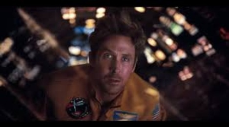
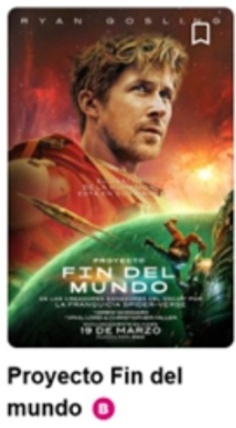

Director Christopher Miller y Phil Lord Elenco Ryan Gosling, Sandra Hüller, James Ortiz, Lionel Boyce, Milana Vayntrub, Priya Kansara Sinopsis El profesor de ciencias Ryland Grace (Ryan Gosling) se despierta en una nave espacial a años luz de casa sin recordar quién es ni cómo ha llegado hasta allí. A medida que recupera la memoria, empieza a descubrir su misión: resolver el enigma de la misteriosa sustancia que provoca la extinción del sol. Deberá recurrir a sus conocimientos científicos y a sus ideas poco ortodoxas para salvar todo en la Tierra de la extinción... pero una amistad inesperada hará que no tenga que hacerlo solo.
|
Duración 2h 36mFecha de Lanzamiento 19 de marzo del 2026 Aventura
Ciencia ficción
B |


Project Hail Mary (titulada: Proyecto Fin del mundo en Hispanoamérica y Proyecto Salvación en España es una película de aventuras y ciencia ficción dura estadounidense producida y dirigida por Phil Lord y Christopher Miller a partir de un guion de Drew Goddard, adaptado de la novela hómonima de Andy Weir de 2021.
Tuvo su estreno mundial en Londres el 9 de marzo de 2026; se estrenó en Latinoamérica el 19 de marzo, en Estados Unidos el 20 y en España el 27 del mismo mes. Su lanzamiento en Estados Unidos estuvo a cargo de Amazon MGM Studios, mientras que Sony Pictures Releasing International se ocupó de la distribución en otros territorios. La película recibió críticas positivas y se convirtió en un éxito de taquilla, recaudando 675,0 millones de dólares, convirtiéndose en la Tercera película más taquillera de 2026 a nivel global.
En marzo de 2020, Metro-Goldwyn-Mayer estaba cerca de un acuerdo para adquirir los derechos de adaptación de la entonces próxima novela de Andy Weir, Project Hail Mary (2021), con Ryan Gosling como protagonista y productor de la película. Los derechos de la novela se adquirieron por 3 millones de dólares. En mayo de 2020, Phil Lord y Christopher Miller fueron contratados para dirigir y producir la película. Debido a que Lord y Miller no pudieron trabajar en el guion ellos mismos por compromisos con Spider-man:Across the Spider-Verse (2023), Drew Goddard (quien previamente adaptó la novela de Weir de 2011, The Martian a pelicula de 2015) fue contratado para escribir el guion al mes siguiente. En abril de 2024, Amazon MGM Studios que adquirió Metro-Goldwyn-Mayer en 2022, anunció una posible ventana de lanzamiento para 2026 para la película. En mayo de 2024, Sandra Hüller se unió al elenco de la película, con Greig Fraser contratado como director de fotografía. En junio de 2024, Miliana Vayntrub se unió al elenco.
Los efectos visuales de la película fueron proporcionados por Framestore (que también colaboró en la adaptación cinematográfica de The Martian), Industrial Light & Magic (ILM), Sony Pictures Imageworks, BUF y Wylie Co. VFX, con Paul Lambert y Mags Sarnowska como supervisores de efectos visuales. Joel Negron editó la película.
Aunque el titiritero James Ortiz prestó su voz a Rocky durante el rodaje con Gosling, inicialmente se pensó que sería reemplazado por un actor de mayor renombre. Sin embargo, Lord y Miller consideraron que la actuación de Ortiz era insuperable durante las proyecciones de la película. Lord elogió la colaboración entre los efectos visuales y prácticos en la creación del personaje y la interpretación de Rocky.
La película producida digitalmente se transfirió a película y luego se volvió a digitalizar ra lograr la «calidez» de la película análogica. La proyección de prueba inicial de la película duró 3 horas y 45 minutos y se redujo a la duración final debido a los comentarios de las proyecciones.
En la Comic-Con de San Diego se anunció que Daniel Pemberton compondría la música de la película. Pemberton trabajó previamente con Lord y Miller en Spider-Man: Un Nuevo Universo y su secuela. Esta es la primera película dirigida por Lord y Miller sin la banda sonora de Mark Motthersbaugh.
La banda sonora incluye la canción "Sign of the Times" de Harry Styles, que además es interpretada en la película por Sandra Hüller. Incluye también El amanecer, un tango del compositor argentino Roberto Firpo. Y Gracias a la vida, de la cantautora chilena Violeta Parra, Y Gracias a la vida, de la cantautora chilena Violeta Parra, en su versión interpretada por la argentina Mercedes Sosa. Estas dos últimas inclusiones se habrían fundamentado en que el director Phil Lord fue criado en un hogar con raíces cubanas, donde se escuchaban artistas de origen argentino; teniendo además un carácter simbólico, ya que la amenaza afecta a toda la humanidad y no solo a Estados Unidos.
El título de la película hace referencia al pase Hail Mary en el fútbol americano, un último intento desesperado por anotar con escasas probabilidades de éxito. El primer tráiler se estrenó el 30 de junio de 2025. Fue el tráiler más visto de cualquier película original en la primera semana de su estreno, acumulando 400 millones de visualizaciones a nivel mundial. Lego, lanzó un modelo de la nave espacial Hail Mary el 1 de marzo de 2026, como parte de la serie Lego Icons.
Project Hail Mary se estrenó el 20 de marzo de 2026, distribuida por Amazon MGM Studios en Estados Unidos y Canadá, y por Sony Pictures Releasing International en el resto del mundo. También se estrenó en salas IMAX, con una relación de aspecto de 1.43:1.
Al 24 de mayo de 2026, Project Hail Mary había recaudado 339,6 millones de dólares en Estados Unidos y Canadá y 335,4 millones de dólares en otros territorios, para un total mundial de 675,0 millones de dólares.
Mientras que Variety estimó que la mayoría de las películas que cuestan 200 millones de dólares producir necesitarían recaudar al menos 500 millones para alcanzar el punto de equilibrio, Amazon MGM dice que utiliza una métrica diferente, donde la pantalla grande proporciona un efecto halo que impulsa las suscripciones y la audiencia en Amazon Prime Video.
Tras recaudar 31 millones de dólares el día del estreno, incluyendo 12 millones en preestrenos, la película debutó con 80,6 millones de dólares en Estados Unidos y Canadá y 60,4 millones en el extranjero, para un total mundial de 141 millones de dólares, convirtiéndose en el mayor debut de Amazon MGM Studios hasta la fecha.
En el sitio web agregador de reseñas Rotten Tomatoes, el 94% e las reseñas de 384 críticos son positivas. El consenso del sitio web dice: «Una odisea espacial visualmente deslumbrante que se desarrolla sin esfuerzo gracias al atractivo gravitacional de Ryan Gosling en su mejor momento, Project Hail Mary es una fusión casi milagrosa de inteligencia y emoción».
Metacritic, que utiliza un promedio ponderado, asignó a la película una puntuación de 77 sobre 100, basada en 60 críticos, lo que indica reseñas «generalmente favorables».
El público encuestado por CinemaScore le dio a la película una calificación promedio de «A» en una escala de A+ a F.
G. Allen Johnson, del diario San Francisco Chronicle, la consideró «una obra maestra del cine familiar palomitero, con un diseño de producción artesanal deslumbrante y un diseño de criaturas y trabajo de marionetas excepcionales».
Haz clic en la imágenes:


2026 Cinedot Todos los derechos reservados. |
|